Abstract
Recent progress in multimodal large language models (MLLMs) has unlocked new possibilities for embodied intelligence, enabling multimodal understanding, reasoning, interaction, and spatial decision-making. However, current MLLM-based systems face two major challenges: (1) the Geometric Adaptability Gap, where reliance on 2D inputs or rigid 3D geometry limits spatial generalization and adaptability; and (2) the Embodiment Constraint Gap, where physical limitations of real robots are often overlooked, leading to impractical task plans. To overcome these issues, we present OmniEVA, a versatile embodied planner featuring two core innovations: (1) a Task-Adaptive 3D Grounding mechanism with a gated router for context-sensitive 3D fusion, and (2) an Embodiment-Aware Reasoning framework that integrates task goals with physical constraints for executable planning. Extensive experiments show OmniEVA achieves state-of-the-art performance in general embodied reasoning and excels across diverse downstream tasks. Benchmark evaluations confirm its robust and flexible planning capabilities.
Method
To address these limitations, we introduce OmniEVA (Embodied Versatile Planner), a novel architecture that pioneers Task-Adaptive 3D Grounding and Embodiment-aware Reasoning. OmniEVA is the first framework to dynamically unify 2D and 3D inputs via task-conditioned feature selection, supporting both general embodied reasoning and grounded embodied task planning through two key innovations:
1. Task-Adaptive 3D Grounding
We introduce a gated routing mechanism that dynamically modulates the infusion of 3D features into the visual-language backbone based on contextual task requirements. This allows for explicit, selective geometric grounding only when spatially essential, avoiding the drawbacks of static 3D fusion and enabling robust performance across both 2D and 3D reasoning tasks.

Figure 1: Detailed architecture of OmniEVA showing the Task-Adaptive 3D Grounding mechanism
2. Embodiment-Aware Reasoning
Moving beyond passive scene understanding, OmniEVA jointly incorporates task goals, environmental context, and physical constraints into its reasoning process. Through post-training with our proposed Task- and Embodiment-aware GRPO (TE-GRPO) algorithm, the model ensures that planning decisions account for object affordances, workspace boundaries, and kinematic feasibility, enabling decisions that are both logically coherent and physically executable.
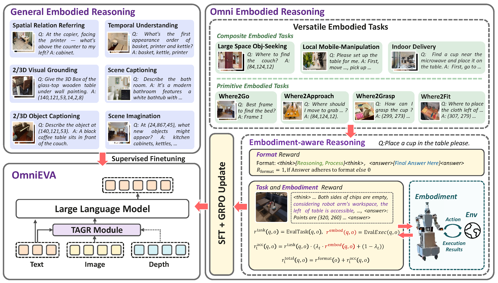
Figure 2: Overall framework of OmniEVA showing the complete pipeline and Embodiment-Aware Reasoning
Benchmark
Primitive Benchmarks
To evaluate the model's capacities in versatile embodied tasks with physical constraints, we introduce four benchmarks that connect primitive embodied capabilities with composite downstream tasks: Where2Go, Where2Fit, Where2Approach, and Where2Grasp. This VQA-style approach substantially reduces evaluation overhead compared to simulator-based online evaluation.
- Where2Go: The agent selects the most informative next view from multiple images to locate a target object in partially observable environments. This aligns closely with Large Space Object Seeking tasks, requiring spatial layout inference and decision-making under uncertainty.
- Where2Fit: The agent identifies free space on tables by predicting 2D points while considering physical constraints including object location, size, and collision potential. This is highly relevant to Mobile Placement (Easy) tasks.
- Where2Approach: The agent identifies free table space not obstructed by chairs, demanding reasoning under occlusion and handling locomotion/manipulation constraints. This aligns with Mobile Placement (Hard) tasks in geometrically challenging scenarios.
- Where2Grasp: The agent identifies objects based on color, size, location, and category, emphasizing object-centric recognition and directly aligning with Mobile Pick-up task requirements.
Where2Go
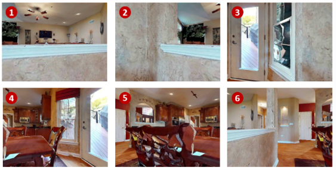
Prompt: From the provided visual input, identify the most informative image frame (with IDs staring from 1) that offers the best chance of locating the sota.
Where2Fit
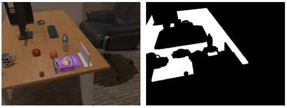
Prompt: Locate some free space for me on the table.
Where2Approach
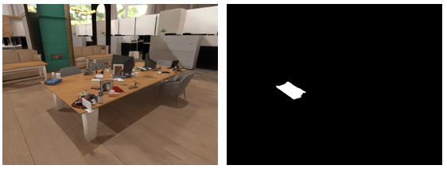
Prompt: Locate the closest empty spot on the table that isn't surrounded by chairs.
Where2Grasp
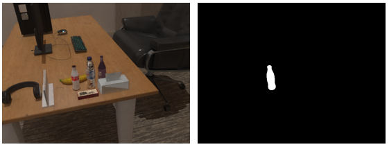
Prompt: Locate the cola bottle on the table.
Figure: Overview of the four embodied reasoning benchmarks: Where2Go, Where2Fit, Where2Approach, and Where2Grasp
Composite Tasks
To evaluate long-horizon planning capabilities, we introduce three composite mobile manipulation tasks that combine multiple primitive skills and require integrated reasoning across navigation, manipulation, and spatial understanding. Our evaluation set comprises over 30 representative scenarios featuring diverse background configurations, varying initial robot poses, and a range of object types, sizes, and locations.
- Mobile Pickup: Involves grasping various objects across diverse scenes and tabletop configurations, directly building on the Where2Grasp primitive capability. The task requires precise pickup operations considering reachability and grasp constraints.
- Mobile Placement (Easy): The robot considers immediate table surface conditions (e.g., object occlusion) to determine optimal placement locations, leveraging skills from Where2Fit before placing the object. Navigate to a designated area and place an object at an accessible location with minimal obstacles.
- Mobile Placement (Hard): The robot must first determine optimal chassis poses while accounting for environmental constraints imposed by spatial arrangements of tabletop objects and surrounding chairs, using the same challenging settings as Where2Approach. Navigate through complex environments and place objects in challenging locations with spatial constraints.
Mobile Placement (Easy)
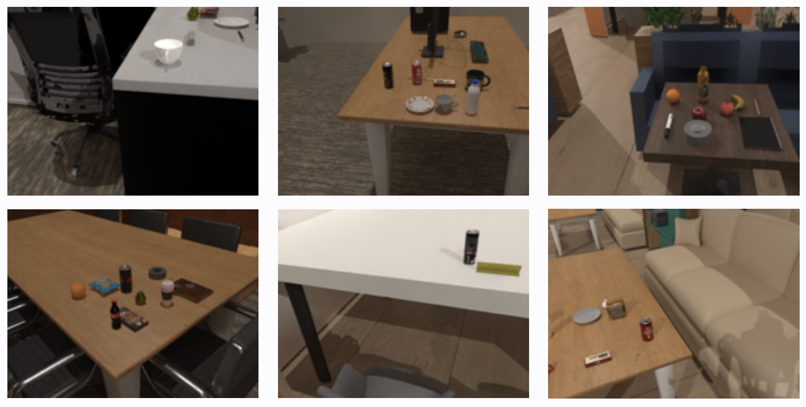
Mobile Placement (Hard)
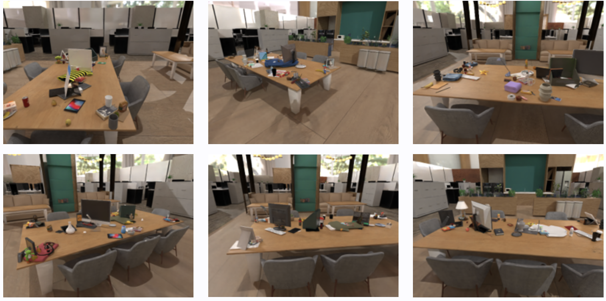
Mobile Pickup
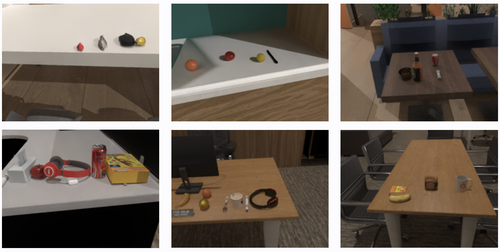
The evaluation involves navigating to target poses, followed by assessing trajectory planning for safe object placement, with success rates calculated based on task completion accuracy.
Figure: Overview of the three composite mobile manipulation tasks
Experimental Results
Performance Visualization Overview
2D Embodied Reasoning
3D Reasoning Benchmarks
In-house Embodied Reasoning
2D Reasoning Benchmarks
OmniEVA consistently achieves state-of-the-art performance across all 2D reasoning benchmarks (Where2Place, VSI-bench, PACO-LVIS, RoboRefit), surpassing significantly larger models including Robobrain-2.0-32B, GPT-4o, and Gemini-2.5-Pro. On average, it delivers a performance gain of +10.45 compared with previous SOTA—Robobrain-32B.
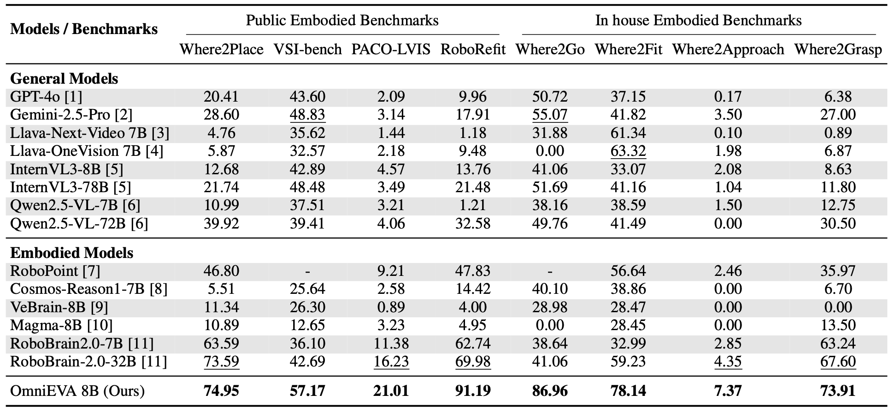
Figure 3: Evaluation results on 2D reasoning benchmarks
3D Reasoning Benchmarks & Object Navigation Benchmarks
Extending to 3D embodied reasoning, we evaluated OmniEVA on four widely adopted benchmarks: SQA3D, ScanQA, Scan2Cap, and ScanRefer, encompassing 3D question answering, captioning, and visual grounding tasks. OmniEVA leads on three out of four benchmarks, outperforming state-of-the-art specialized 3D LLMs with notable improvements of +2.3, +0.3, and +8.5 respectively. In 3D visual grounding (ScanRefer), OmniEVA achieves 55.8 accuracy using purely text-based input/output without external detection modules, significantly exceeding the previous best of 44.4.
For Object Navigation tasks on HM3D and MP3D datasets, OmniEVA outperforms the state-of-the-art navigation model UniNavid in both success rate and path efficiency, achieving a notable +5.4 improvement in SPL by predicting optimal 3D subgoal locations for target object exploration.
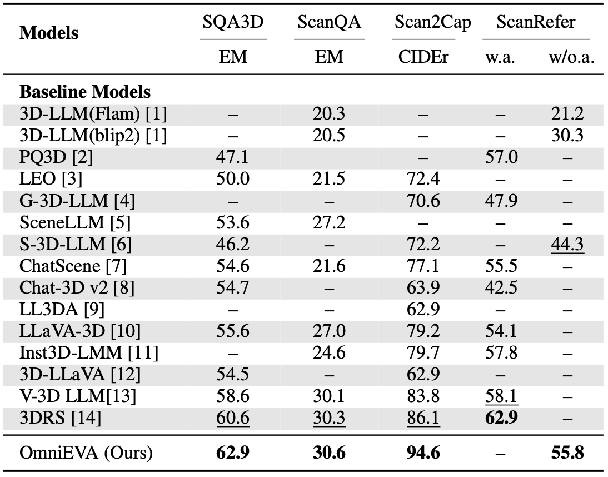
Figure 4: Results on 3D reasoning benchmarks
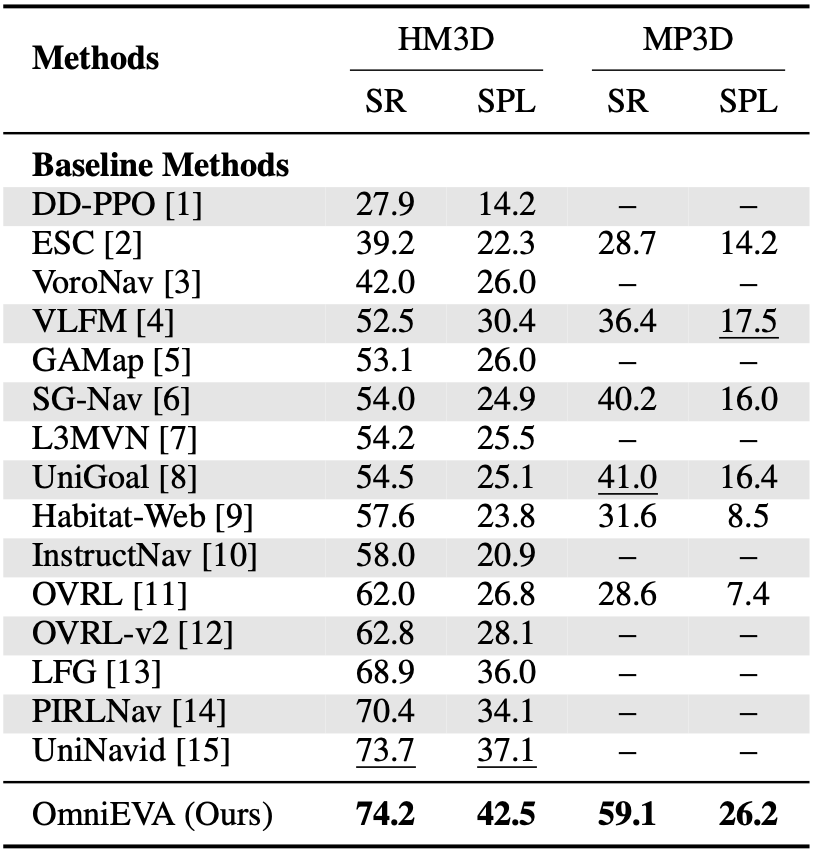
Figure 5: Results on object navigation benchmarks
Ablation Study of the Task-Adaptive 3D-Grounding Method
How Effective Is the Task-Adaptive Gated Router? We compared our approach against two baselines: (1) Hard-coded 3D integration: The 3D features are integrated into visual tokens for all tasks, which is a common strategy employed by prior 3D LLMs. (2) Without 3D integration: With 3D features disregarded, the model can be viewed as a traditional 2D MLLM. As shown in the ablation study results, our method outperforms both baselines in three out of four tasks, yielding an average performance improvement of 1.22%. These results underscore the model's superior adaptability and its capacity to leverage 3D information when contextually appropriate.
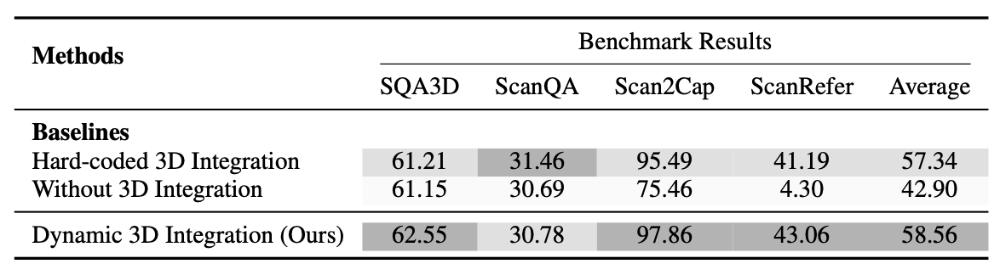
Figure 6: Ablation study results showing the effectiveness of Task-Adaptive 3D-Grounding method
When Is the TAGR Module Activated? To illustrate the conditions under which the Task-Adaptive Gated Router (TAGR) activates, we conducted both quantitative and qualitative analysis. First, we examined the activation probabilities of prompt words across various tasks. Language signals related to geometric attributes (e.g., "shape", "square", "rectangular") and spatial verbs (e.g., "throwing", "go", "away") consistently elicited high activation scores. This pattern suggests that such linguistic cues implicitly signal the need for 3D spatial reasoning. Conversely, prompts centered on object counting or generic inquiries (e.g., "many", "nine") exhibited low activation, implying that these tasks rely predominantly on 2D visual features.
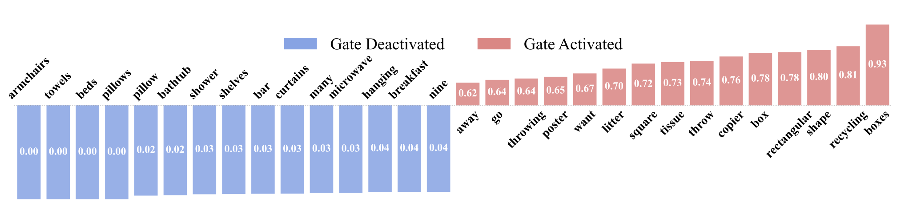
Figure 7: Word activation analysis showing activation probabilities across different prompt types
We further illustrate this behavior through qualitative case studies. In the first two examples, querying the shape of a table and a desk activates the 3D gate with differing probabilities: 0.73 for the rectangular table, indicating ambiguity between "square" and "rectangular" and thus a reliance on 3D cues; and 0.52 for the round table, suggesting sufficient 2D visual information. In contrast, object counting and color identification in the two right-hand examples leave the 3D gate inactive, demonstrating the TAGR module's ability to omit 3D features when spatial reasoning is unnecessary.
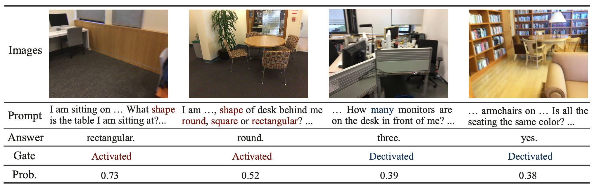
Figure 8: Qualitative case studies showing different activation scenarios of the TAGR module
Ablation Study of Embodiment-aware Reasoning
How Effective Is the TE-GRPO Training Method? Our results demonstrate that the TE-GRPO training method, which jointly optimizes both task rewards and embodiment rewards, leads to significant performance improvements on both primitive skill benchmarks and downstream tasks. Specifically, Where2Approach and Where2Fit exhibit performance gains of 28.95% and 34.28%, respectively. These improvements are also directly reflected in the increased success rates of the Mobile Placement task—by 43% in the Easy variant and 50% in the Hard variant. While both task and embodiment rewards contribute individually to performance enhancement, their combination yields maximized synergistic effects.
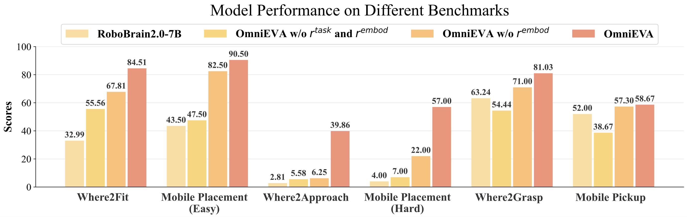
Figure 9: Ablation study results showing the effectiveness of Embodiment-aware Reasoning framework
How does OmniEVA adapt to physical and embodiment constraints? To further understand the model's embodiment awareness, we analyze OmniEVA trained with TE-GRPO. The figure below illustrates its reasoning process. OmniEVA begins by performing task-level analysis, including scenario interpretation, spatial analysis, and textual localization of vacant areas. It then incorporates physical constraints—such as reachability and workspace boundaries—to refine its predictions. Through embodiment-aware reasoning processes and reward reinforcement, the final output is a placement region that satisfies all specified requirements.
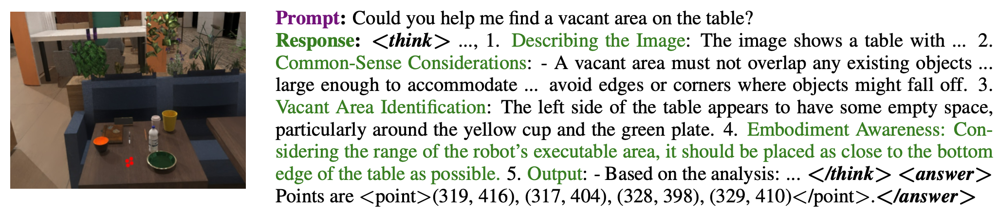
Figure 10: Case study showing how OmniEVA adapts to physical and embodiment constraints
Real World Experiments: Coffee Delivery
Make Coffee
Place on the cluttered square table.
Find a clear area (nearby) unobstructed by chairs to place.
Find a clear area (across) unobstructed by chairs to place.
Move to the long table, find the nearest clear space to place.
Move to the target workstation, place at a suitable position.
Move to the specific table and place next to the documents.
Real World Experiments: Large Space Obj-Seeking
Find a cup for me.
Go to position xx and get back to the pantry.
Turn right and go 2.0 meters.
Go to the printer behind the pantry.